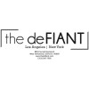
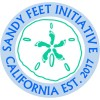

University of San Diego – Knauss School of Business
San Diego, CA | Aug. 2025 – Present
Evaluated ethical supply chain practices across sourcing, supplier risk, and sustainability using Excel, Google Sheets, and academic databases, informing research insights for course deliverables
Analyzed datasets using Excel (PivotTables, advanced formulas) and Python (Pandas) to identify data quality issues and improve reliability of findings
Managed documentation and reporting workflows using Excel and Google Docs, ensuring organization and timely delivery across projects
Streamlined research processes through standardized templates and tracking systems, improving efficiency for recurring tasks
Data & Analytics Intern
Porter Novelli
Los Angeles, CA | Apr. 2025 – Aug. 2025
Analyzed 10,000+ campaign data points using Excel and Google Analytics, uncovering trends that informed PR and marketing strategy across multiple client accounts
Developed standardized reporting frameworks used by 15+ stakeholders, improving consistency, clarity, and speed of performance tracking and decision-making
Conducted competitive and market research using Sprinklr and Hootsuite, delivering insights that supported campaign positioning and media strategy recommendations
Streamlined reporting workflows through Excel automation, reducing turnaround time and enabling more timely insight delivery for client reporting cycles
Managed analytics across 12+ client projects simultaneously, ensuring accurate, on-time reporting that supported ongoing campaign optimization and client satisfaction
Digital Marketing Intern
Kindo
Santa Monica, CA | Dec. 2023 – Apr. 2024
Built and maintained 150+ CMS web pages, contributing to scalable SEO content deployment and improved site coverage
Analyzed performance metrics to identify growth opportunities, informing content strategies that supported increased visibility and traffic potential
Conducted competitive and ROI analysis using SEMrush, influencing resource allocation and prioritization of high-impact content initiatives
Collaborated with cross-functional teams to align execution timelines and performance goals, improving efficiency and coordination of content delivery
Paid Social Marketing TikTok Intern
Power Digital Marketing
Los Angeles, CA | Sep. 2023 – Dec. 2023
Managed and optimized $10K–$50K campaign budgets, improving spend efficiency and maximizing ROI across paid media channels
Built automated Excel reporting tools (PivotTables, XLOOKUP, dynamic dashboards), reducing manual reporting time by 5–8 hours per week and enabling faster, more consistent decision-making
Analyzed multi-channel campaign performance using Excel, Google Analytics, and TikTok Ads Manager, identifying optimization opportunities that increased CTR by 10% and improved overall ad engagement
Translated complex performance data into actionable insights, supporting campaign optimizations that enhanced targeting, engagement, and overall marketing effectiveness
Public Relations Intern
The deFIANT
Los Angeles, CA | Jul. 2023 – Oct. 2023

Supported media outreach efforts by drafting press releases and product marketing materials, increasing brand exposure for client campaigns
Assisted with campaign execution by coordinating timelines, deliverables, and content across PR initiatives
Conducted industry research to support client positioning and messaging strategies
Helped track campaign outcomes by compiling media coverage and performance summaries
Digital Marketing Consultant
Sandy Feet Initiative
Remote | Feb. 2023 – Sep. 2023

Improved online visibility by developing SEO-driven content strategies and optimizing web pages for search performance
Increased engagement by analyzing website and campaign metrics to recommend improvements to digital content strategy
Supported brand growth by creating and publishing content across web and social platforms
Advised stakeholders on digital marketing best practices to strengthen outreach for community-focused initiatives
Marketing Intern
Boxxie
Los Angeles, CA | May 2023 – Aug. 2023
Supported large-scale brand campaigns (Red Bull, Amazon Music, Postmates) by assisting with campaign planning and execution tasks
Conducted competitive and market research to inform creative strategy and campaign positioning
Collaborated with cross-functional teams to coordinate assets and timelines for multi-brand initiatives
Assisted with campaign performance tracking by organizing metrics and insights for internal reporting